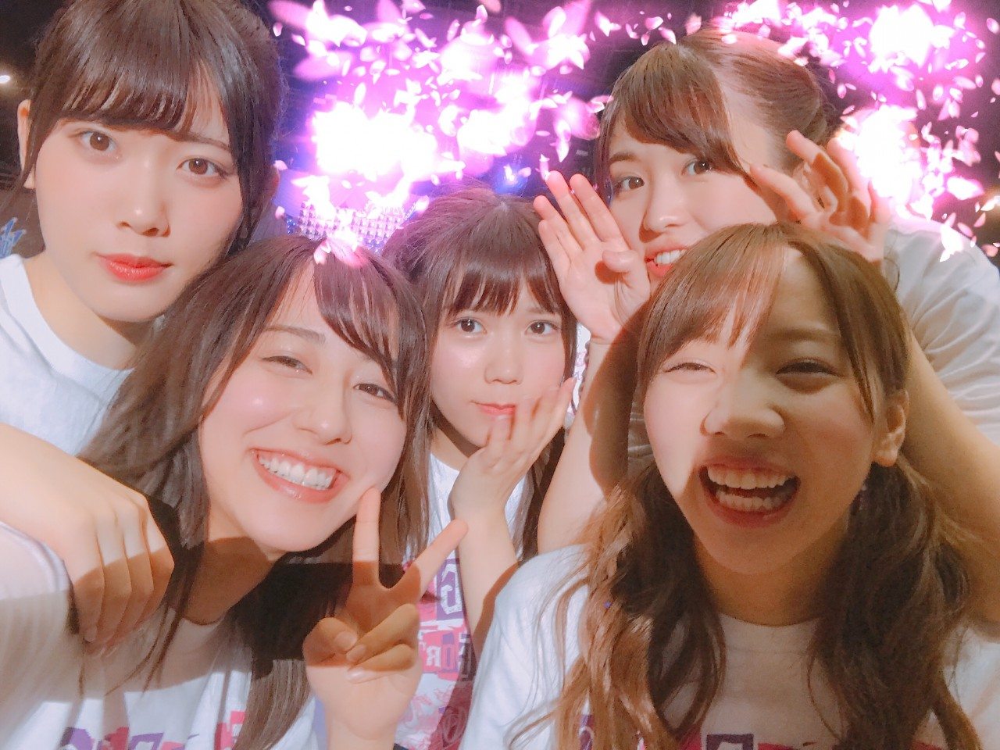
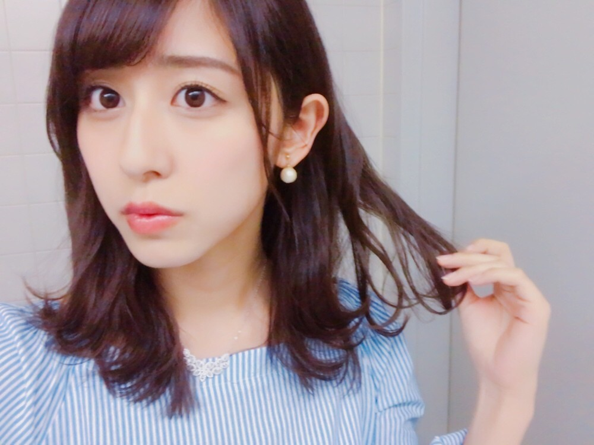

| 2017/04 24 Mon | 振り返り |
ちはるーむへようこそ
今日のちはるーむでは漫画を読みました。
今日は植物学の日。
94歳まで生涯植物研究に費やし、
新種・変種役2500種を発見、命名し
植物学の父と呼ばれた牧野富太郎が
生まれた日にちなんで。
まだまだ知らない植物がある地球って
本当ロマンを感じるよね
アンダーライブについて
少しだけ振り返り。
今回のアンダーライブでは、
ファンタスティック3という企画をしました！
1日3人をフィーチャーして
その3人に4曲のセンターを務めてもらうという企画。
今までのセンター企画より
より一人一人をフィーチャーできる。
人数が少ないからこそですね
私は
「生まれたままで」
「左胸の勇気」
「扇風機」
「君の名は希望」
のセンターを務めました！
どのアンダー曲もコールがしやすく
ライブには欠かせない曲
そのセンターが出来たのは
とても嬉しかったです☺︎
左胸の勇気では、
いつも間奏で「乃木坂！46！」とコールする所で
「さいとう！ちはる！」とコールしていただきました◎
楽しかった〜！
フルネームがポイントっ
そして君の名は希望。
メンバーもファンの皆さんも
大切にしているこの曲で
センターで歌えて
ソロパートをいただけて
幸せでした。
また歌いたい！！
と素直に思いました


なかよし
このアンダーライブ期間で
よりみんなと仲良くなった気がする
------------------------------------------------♡
♬ ChihaMusic
「車輪の唄」BUMP OF CHICKENさん
歌詞の中の世界が
とても美しくて
胸がきゅんとする。
テンポの良いメロディに載せる
切ない歌詞も好き。
"笑っただろう あの時 僕の後ろ側で
振り返る事が出来なかった 僕は泣いてたから"
なんて美しいんだろう
ストーリー性のある歌詞が
より惹きこまれていく

髪の毛切ったけど
もう伸びてきた気がする...
伸びるの早い！
今日もChihAnswer募集します
お待ちしています◎
おやすみ
斎藤ちはる
コメント(330)
2017/04/24 23:58